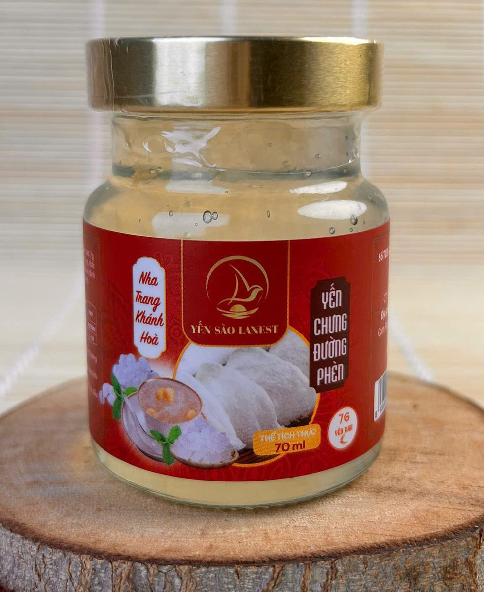
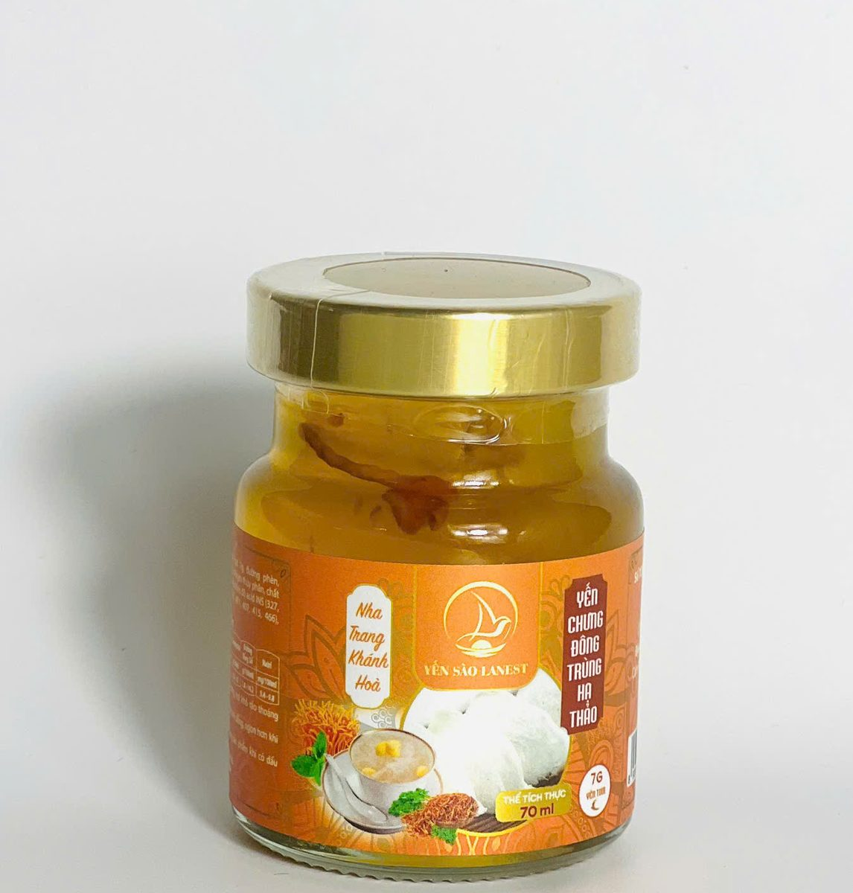

Cách Đọc Phiếu Kiểm Nghiệm Yến Hũ Chưng Sẵn: Vi Sinh, Chì Và Mức Công Bố
Yến Sào Lanest · Đăng ngày 27/11/2026

Mua yến hũ, nhiều người chỉ nhìn nhãn và giá. Nhưng tờ giấy nói rõ nhất hũ yến có sạch không lại là phiếu kiểm nghiệm yến hũ, thứ ít ai xin và càng ít người đọc. Bài này mở đúng phiếu kết quả thử nghiệm của hũ Yến Chưng Đường Phèn Lanest, đi qua từng dòng, để lần sau cầm phiếu của bất kỳ nơi nào anh chị cũng tự đọc được.
Hũ Yến Chưng Đường Phèn 7g yến tươi, vị dùng làm ví dụ trong bài
1. Bản tự công bố và phiếu kiểm nghiệm: hai tờ khác nhau
Hai loại giấy này hay bị nhầm là một:
- Bản tự công bố là lời cam kết của doanh nghiệp: sản phẩm gồm những gì và đạt mức an toàn nào. Với yến hũ 7g của Lanest, các mức này lấy theo QCVN 6-2:2010/BYT, quy chuẩn quốc gia cho đồ uống không cồn.
- Phiếu kiểm nghiệm (phiếu kết quả thử nghiệm) là kết quả đo thật trên một mẫu, do một phòng thử nghiệm bên ngoài thực hiện và ký tên.
Đọc phiếu đúng cách là đặt hai tờ cạnh nhau: doanh nghiệp hứa mức nào, phòng thử nghiệm đo ra bao nhiêu. Số trên nhãn, như số tự công bố, đã có bài cách đọc nhãn yến hũ giải thích.
2. Trang đầu phiếu: đọc 5 dòng trước
Trang đầu phiếu của hũ Yến Chưng Đường Phèn do Newcenlab (Công ty CP Dịch vụ Khoa học và Công nghệ Thế Kỷ Mới) thực hiện. Đây là những dòng anh chị nên nhìn đầu tiên:
- Tên khách hàng: Công ty TNHH Yến Sào Lanest. Tên trên phiếu phải khớp tên đơn vị trên nhãn.
- Tên mẫu: YẾN CHƯNG ĐƯỜNG PHÈN. Phiếu của vị nào chỉ nói về vị đó.
- Ngày nhận mẫu và ngày trả kết quả: nhận 03/06/2025, trả 18/06/2025. Ngày cho biết phiếu mới hay cũ.
- Tình trạng mẫu: "mẫu do khách hàng lấy mẫu", đựng trong hũ thủy tinh kín. Nghĩa là doanh nghiệp tự gửi mẫu đi, phòng thử nghiệm đo đúng mẫu nhận được.
- Chữ ký và dấu: phiếu có chữ ký phụ trách kỹ thuật, giám đốc, đóng dấu của đơn vị thử nghiệm.
3. Trang hai: bảng chỉ tiêu, đặt cạnh mức công bố
Bảng dưới ghép mức Lanest công bố trong hồ sơ và kết quả trên phiếu của hũ Yến Chưng Đường Phèn, giữ nguyên đơn vị như giấy tờ gốc:
| Chỉ tiêu | Mức công bố | Kết quả trên phiếu |
| Chì (Pb) | ≤ 0,05 mg/l | Không phát hiện (giới hạn phát hiện 0,01 mg/kg) |
| Tổng số vi sinh vật hiếu khí | ≤ 100 CFU/ml | 8,0×10¹ CFU/ml (tức 80) |
| Coliform | 10 CFU/ml | <1 CFU/ml |
| E. coli | 0 | <1 CFU/ml |
| Streptococci faecal | 0 | <1 CFU/ml |
| Pseudomonas aeruginosa | 0 | <1 CFU/ml |
| Staphylococcus aureus | 0 | <1 CFU/ml |
| Clostridium perfringens | 0 | <1 CFU/ml |
| Nấm men, nấm mốc | ≤ 10 CFU/ml | <1 CFU/ml |
CFU/ml (colony forming unit, đơn vị khuẩn lạc trên mỗi ml) là cách đếm vi sinh vật: phòng thử nghiệm cấy mẫu lên đĩa rồi đếm số đốm vi sinh mọc lên.
4. "<1 CFU/ml" và "KPH" nghĩa là gì?
Đây là hai ký hiệu gặp nhiều nhất trên phiếu yến hũ:
- "<1 CFU/ml": chính phiếu ghi chú rằng theo phương pháp thử, kết quả biểu thị nhỏ hơn 1 CFU/ml tương ứng "không phát hiện" khi không có khuẩn lạc nào mọc trên đĩa. Sáu nhóm vi sinh gây hại và nấm men, nấm mốc của hũ đường phèn đều ra kết quả này.
- "KPH (LOD = 0,01)": KPH là không phát hiện; LOD là giới hạn phát hiện của phương pháp. Với chì, máy đo không thấy chì ở mức từ 0,01 mg/kg trở lên.
Phiếu còn đánh dấu (*) ở các phương pháp thử vi sinh, kèm ghi chú phương pháp được công nhận theo ISO/IEC 17025:2017. Khi đọc phiếu của nơi khác, anh chị cũng nên tìm dòng ghi chú này.

Hũ Yến Chưng Đông Trùng Hạ Thảo, mỗi vị có phiếu thử nghiệm riêng
5. Tổng số vi sinh vật hiếu khí: con số duy nhất không phải "<1"
Nhiều người thấy dòng này ra 80 thì giật mình. Thật ra đây là chỉ tiêu đếm chung, và hồ sơ cho phép tới 100 CFU/ml. Viết 8,0×10¹ chỉ là cách ghi số khoa học: 8,0 nhân 10, bằng 80.
Đặt các vị cạnh nhau sẽ thấy rõ hơn. Ở 13 vị yến hũ 7g có phiếu năm 2025 trong hồ sơ tự công bố của Lanest, chỉ tiêu này nằm trong khoảng từ 5,4×10¹ (54) đến 8,5×10¹ (85) CFU/ml, đều dưới mức công bố 100. Ví dụ:
- Yến chưng long nhãn: 5,4×10¹ CFU/ml.
- Yến chưng đông trùng hạ thảo: 5,6×10¹ CFU/ml.
- Yến chưng đường phèn: 8,0×10¹ CFU/ml.
- Yến chưng hạt sen: 8,5×10¹ CFU/ml.
Điều Lanest muốn anh chị nhớ: một phiếu tốt là phiếu ghi đủ số, kể cả số không phải 0, rồi đặt được cạnh mức công bố. Phiếu chỉ ghi chung chung "đạt" mà không có con số thì khó kiểm tra hơn.
6. Phiếu nói được gì, không nói được gì
- Chỉ đúng với mẫu đã gửi. Phiếu ghi rõ "kết quả chỉ có giá trị trên mẫu thử". Vì vậy kiểm nghiệm phải làm đều. Người sáng lập Lanest từng chia sẻ lý do Lanest trụ được qua năm khó: "hàng tháng đều tự gửi mẫu đi kiểm nghiệm thật."
- Không nói lượng yến nhiều hay ít. Phiếu vi sinh, chì không đo hàm lượng yến. Lượng yến xem trên nhãn: dòng 7g ghi 7g yến tươi mỗi hũ.
- Không nói công dụng. Phiếu chứng minh mẫu sạch theo các chỉ tiêu đã đo, không chứng minh yến chữa được bệnh gì. Yến hũ là thực phẩm, không phải thuốc; người đang điều trị bệnh nên hỏi bác sĩ trước khi dùng thường xuyên.
- Không thay cho khâu làm hàng. Phiếu là bước cuối. Chất lượng còn nằm ở nguyên liệu và cách làm: với yến tinh chế, đội thợ riêng của Lanest làm sạch bằng tay qua 4 chốt kiểm, không tẩy trắng. Phiếu đạm và acid amin của yến tinh chế có ở bài trong tổ yến có gì.
Câu hỏi thường gặp
Tổng vi sinh vật hiếu khí 80 CFU/ml có đáng lo không?
Hồ sơ tự công bố của Lanest đặt mức tối đa 100 CFU/ml cho chỉ tiêu này theo QCVN 6-2:2010/BYT. Kết quả 80 nằm dưới mức đó. Các vi sinh gây hại được đo riêng và đều ra "<1 CFU/ml", tức không phát hiện.
Mỗi vị yến hũ có phiếu riêng không?
Có. Mỗi vị yến hũ 7g trong hồ sơ tự công bố năm 2025 có phiếu kết quả thử nghiệm riêng, ghi đúng tên vị ở dòng "Tên mẫu".
Muốn xem phiếu gốc thì làm sao?
Anh chị gọi 0258 6278 627, nói rõ vị đang quan tâm để được gửi đúng phiếu của vị đó. Đại lý nhập hàng cũng nên giữ sẵn phiếu để đưa khách khi được hỏi.